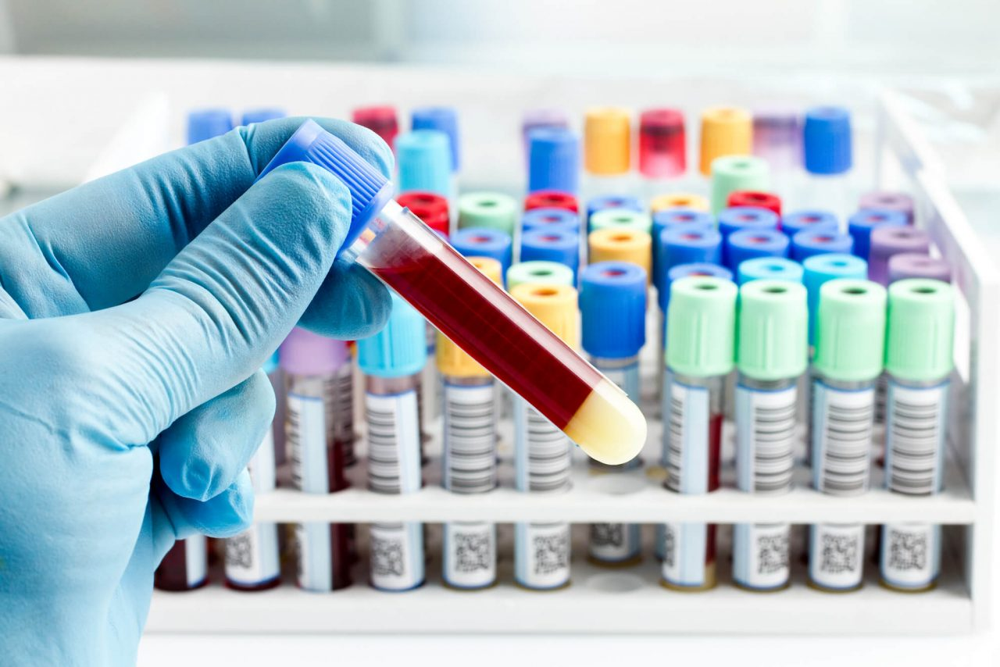

<!DOCTYPE html>
<html lang="pt">

</html>

<head>
    <meta charset="UTF-8" />
    <meta name="viewport" content="width=device-width, initial-scale=1.0" />
    <link rel="stylesheet" href="../styles/defaults.css" />
    <link rel="stylesheet" href="../styles/exames-oferecidos.css" />
    <title>Exames</title>
</head>

<body>
    <address class="user-bubble">
        <p>Charlie Doe</p>
        
    </address>
    <header>
        <a class="logo" href="../index.html"></a>
        <h1 class="title">Exames Oferecidos</h1>
    </header>
    <nav>
        <ul>
            <li class="dropdown">
                <a href="../index.html">Início</a>
            </li>
            <li class="dropdown">
                <span class="dropbtn">Exames</span>
                <ul class="dropdown-content">
                    <li>
                        <a href="exames-oferecidos.html">Exames oferecidos</a>
                    </li>
                    <li><a href="agendamentoExames.html">Fazer agendamento</a></li>
                    <li><a href="consultaAndamento.html">Consultar resultados</a></li>
                </ul>
            </li>
            <li class="dropdown">
                <a href="./about.html">Sobre Nós</a>
            </li>
        </ul>
    </nav>
    <main>
        <section class="container">
            <article>
                <h2>
                    Exames Oferecidos
                </h2>
            </article>
            <section class="card">
                <h4 class="card-title">Hemograma Completo</h4>
                <p>
                    Hemograma é um exame que avalia as células sanguíneas de um
                    paciente, ou seja, as da série branca e vermelha, contagem de
                    plaquetas, reticulócitos e índices hematológicos.
                    Prazo médio até 48 horas
                    Preço: R$ 1,77
                </p>
            </section>
            <section class="card">
                <h4 class="card-title">Parcial de Urina</h4>
                </br>
                <p>
                    O exame de urina é o teste que analisa características físicas,
                    químicas e microscópicas desse fluido corporal.
                    Ele serve tanto para verificar a saúde do sistema
                    urinário quanto para investigar diversos tipos de alteração no organismo.
                    Prazo médio até 48 horas
                    Preço: R$ 3,50
                </p>
            </section>
            <section class="card">
                <h4 class="card-title">Glicemia em Jejum</h4>
                <p>
                    O exame de glicemia em jejum serve para medir o nível da glicose na circulação sanguínea do
                    paciente.
                    É necessário estar de 8 a 12 horas de jejum, sem consumir nenhum tipo de alimento ou bebidas,
                    apenas água é permitido.
                    O exame é utilizado para investigar possíveis casos de diabetes e para controle da doença.
                    Prazo médio até 48 horas
                    Preço: R$ 0,68
                </p>
            </section>
            
        </section>
    </main>
    <footer>
        <p class="copyright">&copy; 2020 LevidebadLab Inc.</p>
        <ul>
            <li>Adolfo</li>
            <li>Débora</li>
            <li>Leonardo</li>
            <li>Vinícius</li>
        </ul>
    </footer>
</body>

</html>